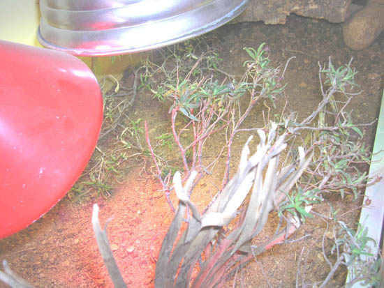

|
UTILIZACI�N DE CAJONES
PARA PUESTAS DE INTERIOR. UNA EXPERIENCIA PERSONAL
Fernando P�rez, 2006
La
mayor�a de las tortugas mediterr�neas realizan las puestas en exterior
en lugares soleados y sabiamente elegidos por las hembras para llevar
a cabo esta labor. No obstante, el que intenta
reproducir tortugas de climas tropicales o
�ridos no puede dejar a sus animales expuestos a las inclemencias
meteorol�gicas, ya que las fechas en las que este tipo de tortugas
realizan las puestas no son las m�s apropiadas para realizarlas a la
intemperie.
La tortuga estrellada de
la India (Geochelone elegans) inicia sus ciclos de desove a
finales de septiembre, llegando a realizar puestas hasta mediados de
enero. Testudo kleinmanni
a partir de diciembre.
Geochelone
radiata
tiene el 90% de sus puestas desde septiembre hasta abril. Kinixys
belliana
nogueyi pone
la mayor�a de huevos desde noviembre a febrero. Kinixys homeana
de noviembre a enero. De Chersina angulata
pueden encontrarse puestas desde noviembre hasta marzo. Estos son algunos
ejemplos de especies que pueden necesitar alojamientos
en interiores, ya que en Espa�a
a partir de octubre es dif�cil conseguir buenas condiciones
meteorol�gicas para que los animales realicen sus puestas en exterior.
En el sur de la pen�nsula, donde las temperaturas en invierno son m�s
benignas, a veces se puede aprovechar durante m�s tiempo el exterior.
Luis Checa utilizaba l�mparas de infrarrojos de gran potencia para que
sus sulcatas acabasen sus puestas en exterior bien entrada la noche en
el invierno. En casa hemos tenido puestas de Geochelone elegans
en exterior a mediados de noviembre en una jardinera muy soleada.
Contar en nuestras
instalaciones con un caj�n de puestas nos ayudar� a conseguir que
esas especies realicen esta labor en un medio seguro, totalmente controlado y con unas condiciones clim�ticas
�ptimas.
Muchos aficionados
utilizan los mismos alojamientos donde mantienen a sus animales para
que las hembras hagan las puestas, con el inconveniente de encontrarse m�s
ejemplares molestando a las hembras gr�vidas, menos capacidad para dotar al substrato de las condiciones id�neas para realizar esta
operaci�n y un control menos eficaz a la hora de encontrar los huevos
en buenas condiciones. Utilizar bandejas o
recipientes con tierra dentro del recinto habitual de los animales,
iluminadas con una l�mpara que caliente el substrato, puede ocasionar
que las hembras no utilicen ese medio y que los huevos sean puestos en
otro sitio, fuera de los lugares deseados e inclusive rotos por el
resto de animales que existe en el recinto.
Desde que mis tortugas
han tenido descendencia en meses fr�os, he procurado cajones de puesta
para que las hembras individualmente los utilicen idividualmente. En
cuanto he notado que cualquier hembra gr�vida me ha dado muestras de
la inminente puesta, la he
trasladado de su alojamiento normal al caj�n.

Vista superior del
caj�n, se observa pantallas iluminaci�n
UVA/UVB
e infrarrojos.
El caj�n de puestas,
dependiendo de la especie, est� dotado con una profundidad de
substrato suficiente para que la tortuga que lo utilice no tenga
ning�n tipo de problema. Cuenta con iluminaci�n
UVA/UVB
proyectada con una l�mpara PowerSun�
adem�s de un foco de
infrarrojos que
eleva la temperatura en una parte del recinto y que suele ser
utilizada por la hembra para realizar el agujero de la puesta. Tambi�n
se puede dotar al caj�n de vegetaci�n seca, ramas, piedras y
cualquier elemento que pueda ayudar a que el animal encuentre un lugar
seguro donde realizar las puestas.
Hembras
inspeccionando y oliendo
el terreno para captar el gradiente de temperatura de las l�mparas.
El caj�n destinado para
las puestas de Geochelone elegans manten�a una profundidad de unos 25
cm, con turba/arena/tierra, vegetaci�n seca en la superficie y un
substrato compacto y algo h�medo. En las tres puestas realizadas en
este medio la hembra durante la primera hora deambula por toda su
superficie, olfateando el substrato y comprobando el gradiente de
temperatura que conforma la iluminaci�n. Tras largo rato decide el
lugar donde realizar la c�mara para el desove y se pone a la tarea, es
un gran agujero y el trabajo laborioso, acabando con la puesta de los
huevos y el posterior rellenado con la tierra extra�da.
El nido siempre se
realiza cercano al �rea calentada por el foco de
infrarrojos.
Hembra tapando la
c�mara con los huevos.
El caj�n destinado para
Testudo
kleinmanni conten�a un substrato m�s arenoso y con menos
humedad que el de Geochelone elegans,
con una profundidad menor y dotado con ramas secas, a modo de matorrales, que ayudan a que esta
especie realice las puestas con mayor comodidad. La hembras de
T.kleinmanni tambi�n examinan durante largo rato el substrato hasta elegir la zona
ideal, preferentemente bajo alg�n arbusto, tronco o similar, que
resguarda la zona de puesta.
Testudo kleinmanni es m�s delicada a la hora de
elaborar la c�mara de desove y puede retirarse del agujero por no
sentirse c�moda a la hora de la puesta. He comprobado que el substrato
arenoso o una capa de tierra seca suelta en la superficie del
substrato favorecen que esta especie realice las puestas.
La colocaci�n de
ramas y arbustos para que el animal se sienta resguardado es una buena
opci�n.
Testudo
kleinmanni prefiere una capa arenosa o de tierra y piedras de
peque�o tama�o muy
sueltas en la superficie del substrato.
Instantes antes a la
puesta y con el agujero pr�cticamente terminado.
Cualquier especie de peque�a o media
talla puede utilizar c�modamente este tipo de instalaciones para
realizar sus puestas anuales, permiti�ndonos una mejor vigilancia y
control a la hora de que nuestras hembras desoven. Siempre comprobando
los par�metros id�neos para cada especie en cuesti�n: tama�o del
caj�n, tipo de substrato, vegetaci�n o ramas, humedad etc.
El caj�n puede tener las dimensiones que
creamos oportunas. No necesariamente tiene que
ser un alojamiento excesivamente amplio, ya que la hembra lo que busca
con af�n es un substrato id�neo para realizar la puesta y alg�n
elemento decorativo (arbusto o ramajes) que le d� seguridad. Si la hembra tiene
15cm de talla un substrato
con unos 25cm de profundidad ser� ideal. Algo m�s de un metro
de largo
por medio de ancho ser� m�s que suficiente. Unos 10cm
m�s de profundidad de substrato que la talla total de la hembra es, sin duda, un buen par�metro a tener en cuenta.
La colocaci�n de l�mparas
se realiza con soportes y pantallas que iluminen el caj�n a la
distancia necesaria para lograr el gradiente de temperatura id�neo. La
l�mpara PowerSun� dotar� al recinto de iluminaci�n rica en
UVA/UVB
para que los animales visualicen el entorno perfectamente y se sientan
estimulados. El uso conjunto de una l�mpara de infrarrojos incrementar� la
sensaci�n calor�fica en una zona del recinto causando m�s
acentuadamente el efecto solar que pretendemos imitar.
En mi experiencia, la crianza en alojamientos artificiales
dotados de profundidad de substrato suficiente y condiciones similares
al h�bitat natural, garantizan que el mantenimiento y cr�a de tortugas
terrestres se puede llevar a cabo sin ning�n problema. Mis
alojamientos de exterior son jardineras en las que mantengo todo el
a�o Testudo hermanni
hermanni.
En ellas han realizado puestas con total
�xito de nacimientos, tanto incubados artificialmente como en el mismo
substrato del recinto. Tambi�n se han realizado puestas de Geochelone
elegans en exterior, que han sido incubadas artificialmente. En los
cajones de interior hemos conseguido puestas de Geochelone
elegans y
de Testudo kleinmanni sin ning�n tipo de problemas.
He
querido compartir esta forma de crianza que realizo en mis
instalaciones, porque creo que es una buena opci�n para la cr�a de
especies que realizan sus puestas en temporadas distintas a las
estivales en nuestra pen�nsula y que no sean ejemplares de gran
tama�o. No hay duda que en su h�bitat natural las condiciones para que
los animales realicen estas tareas son las m�s id�neas y, a veces
inimitables, pero el criador en cautividad debe intentar conseguir
par�metros similares a los del h�bitat natural, para que sus
ejemplares encuentren las condiciones ideales a�n siendo artificiales.
No hay que olvidar que nosotros somos la naturaleza para los animales
que mantenemos.
|